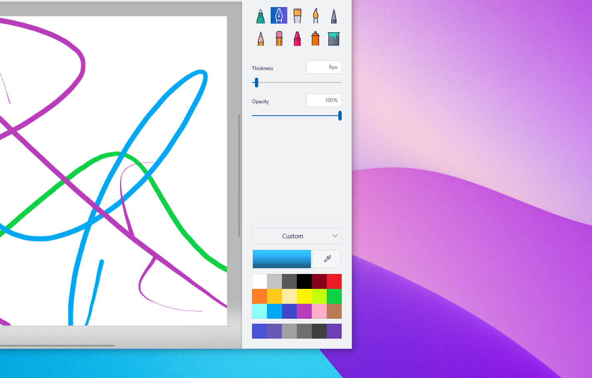
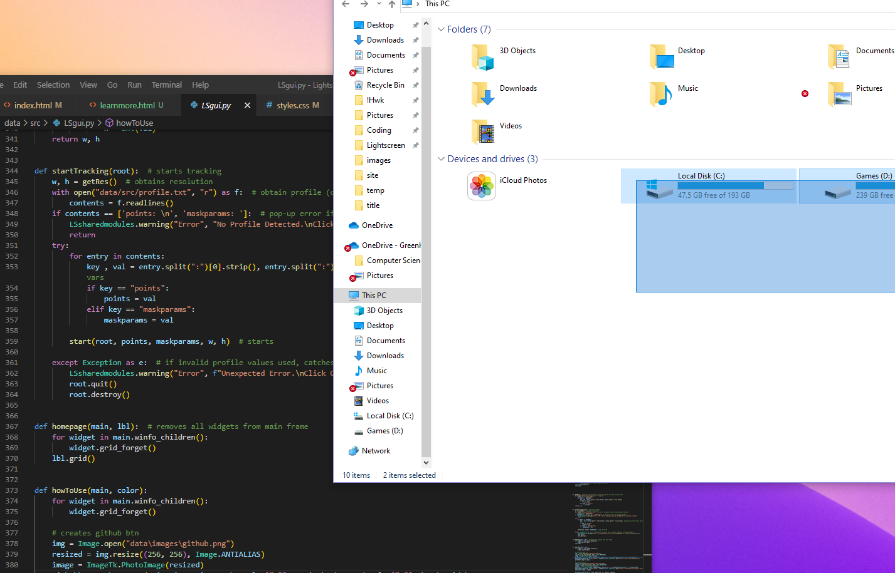
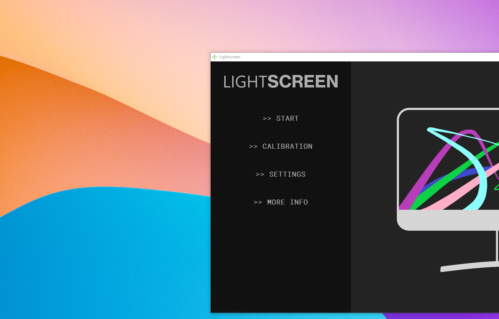

Unlock touch for any monitor




Obtains the co-ordinates of the corners of the screen and warps the perspective of the recieving frames
Generates a mask to detect only the color of the stylus LED. Can be manually configured to work with any color stylus
Tracks the placement of the stylus using a combination of contour and brightest pixel detection. Camera exposure must be reduced for effective detection
Uses the co-ordinates obtained control the position of the cursor. Two modes for either dragging or drawing on the screen
Download the latest version of lightscreen and configure the settings for your screen
A webcam is required for lightscreen to work. It should be facing towards the screen. The exposure must be ajustable
A controllable LED is required. Alternatively, a laser can also be used if the mask is configured correctly.
Uses the co-ordinates obtained control the position of the cursor. Two modes for either dragging or drawing on the screen
Automatic mask creation creates a mask compatible with blue LED styluses. It is the reccommended method of mask generation if using a blue LED.
Manual mask creation is only reccommended if using an LED color other than blue. In order to generate a working mask, you must first obtain the HSV (Hue, Saturation, Value) color value of the LED. This can be done using a online color picker tool. You must then change the upper and lower HSV bounds accordingly until only your LED shows in the mask
This mode allows you to simulate the mouse drag input allowing you to relocate windows, close tabs, open programs and move files. To switch to dragging mode, hold the LED still for approximately 1 second, and the program will play and audible low pitched noise signalling the change
This mode allows you to use the LED to draw on a canvas. This mode works by keeping a track of the current and previous LED position and drawing a line between these points. This is done for every frame captured from the webcam and provides the ability to draw smooth curves simulating a real pen